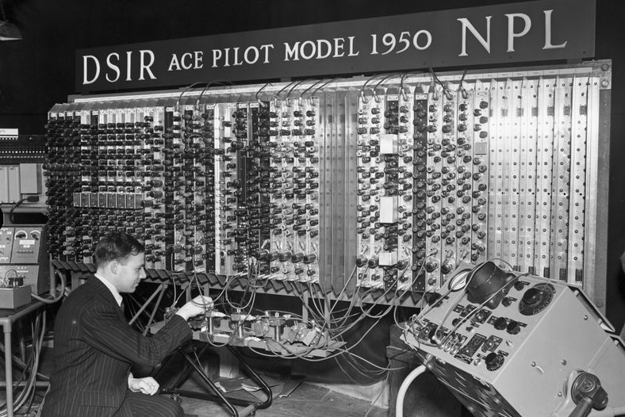
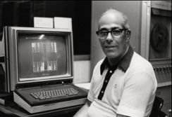
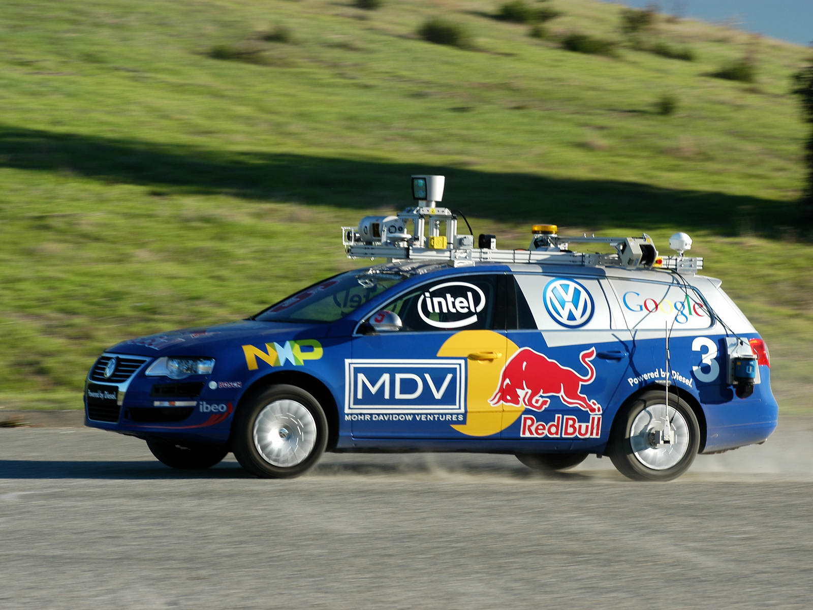
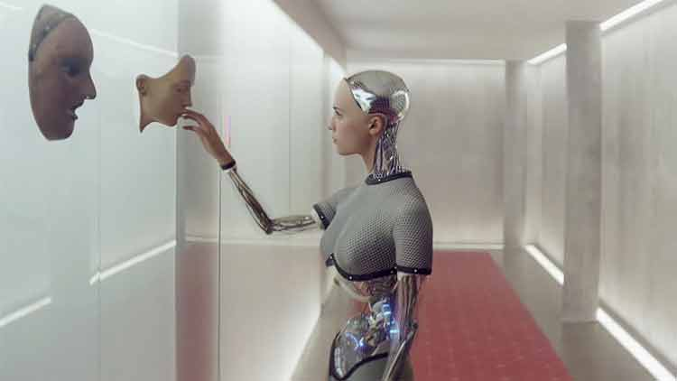

La inteligencia artificial (IA) ha sido un área fascinante de investigación y desarrollo desde mediados del siglo XX, marcando un hito en la intersección entre la informática, la ciencia cognitiva y las matemáticas. La evolución de la IA ha sido un viaje extraordinario, desde sus modestos inicios hasta las complejas aplicaciones contemporáneas que definen nuestras vidas diarias.
En sus primeros pasos, en la década de 1950, pioneros como Alan Turing y John McCarthy sentaron las bases teóricas de la inteligencia artificial, estableciendo los primeros conceptos y algoritmos que allanarían el camino para décadas de innovación. En estos primeros días, la IA se centraba en problemas más simples, como el ajedrez y la resolución de problemas matemáticos.
Con el tiempo, la IA evolucionó hacia sistemas más complejos. En las décadas de 1970 y 1980, se produjo un aumento en la investigación en aprendizaje automático, que permitió a las máquinas mejorar su rendimiento en tareas específicas a medida que se exponían a más datos. Sin embargo, los recursos computacionales limitados y la falta de conjuntos de datos masivos impidieron avances significativos en ese momento.
Se espera que la inteligencia artificial continúe evolucionando, abordando desafíos más complejos y teniendo un impacto significativo en diversas industrias.
101 cosas que debes saber sobre nuestro futuro
Modelos y Técnicas y Áreas de Aplicación
| Año | Descripción | Url | Imagen |
|---|---|---|---|
| 1950 | Tras decifrar la máquina enigma durante la segunda guerra mundial, Alan Turin plantea si las máquinas pueden pensar y presentar el test de turing | Visitar Wikipedia |  |
| 1961 | EL profesor Mellon crea un ordenador vence al campeón mundial Luigui Villa e impulsa al desarrollo de juegos más complejos | Visitar Timegraphics |  |
| 2005 | Un Ordenador al volante, un vehículo robot conduce 212 Kilómetros en desierto sin apoyo humano | Visitar diario el Pais |  |
| 2016 | Microsoft lanza Tay un chatbot capaz de aprender apartir de la interacción con las personas. Tras un dia de funcionamiento el Robot se vuelve racista, xenófobo y homófobo | Visitar BBC Mundo | |
| ¿2045? | La inteligencia Artificial supera la humana. Segun Ray Kurswaii los ordenadores razonarán mejor que un humano | Visitar ICCSI>/a> |  |